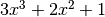
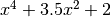

Parameters¶
Most models in this package are “parametric” in the sense that each subclass
of Model represents an entire family of models, each
member of which is distinguished by a fixed set of parameters that fit that
model to some some dependent and independent variable(s) (also referred to
throughout the the package as the outputs and inputs of the model).
Parameters are used in three different contexts within this package: Basic evaluation of models, fitting models to data, and providing information about individual models to users (including documentation).
Most subclasses of Model–specifically those implementing a
specific physical or statistical model, have a fixed set of parameters that can
be specified for instances of that model. There are a few classes of models
(in particular polynomials) in which the number of parameters depends on some
other property of the model (the degree in the case of polynomials).
Models maintain a list of parameter names,
param_names. Single parameters are instances of
Parameter which provide a proxy for the actual parameter
values. Simple mathematical operations can be performed with them, but they
also contain additional attributes specific to model parameters, such as any
constraints on their values and documentation.
Parameter values may be scalars or array values. Some parameters are
required by their very nature to be arrays (such as the transformation matrix
for an AffineTransformation2D). In most other
cases, however, array-valued parameters have no meaning specific to the model,
and are simply combined with input arrays during model evaluation according to
the standard Numpy broadcasting rules.
Parameter examples¶
Model classes can be introspected directly to find out what parameters they accept:
>>> from astropy.modeling import models >>> models.Gaussian1D.param_names ('amplitude', 'mean', 'stddev')
The order of the items in the
param_nameslist is relevant–this is the same order in which values for those parameters should be passed in when constructing an instance of that model:>>> g = models.Gaussian1D(1.0, 0.0, 0.1) >>> g <Gaussian1D(amplitude=1.0, mean=0.0, stddev=0.1)>
However, parameters may also be given as keyword arguments (in any order):
>>> g = models.Gaussian1D(mean=0.0, amplitude=2.0, stddev=0.2) >>> g <Gaussian1D(amplitude=2.0, mean=0.0, stddev=0.2)>
So all that really matters is knowing the names (and meanings) of the parameters that each model accepts. More information about an individual model can also be obtained using the
helpbuilt-in:>>> help(models.Gaussian1D)
Some types of models can have different numbers of parameters depending on other properties of the model. In particular, the parameters of polynomial models are their coefficients, the number of which depends on the polynomial’s degree:
>>> p1 = models.Polynomial1D(degree=3, c0=1.0, c1=0.0, c2=2.0, c3=3.0) >>> p1.param_names ('c0', 'c1', 'c2', 'c3') >>> p1 <Polynomial1D(3, c0=1.0, c1=0.0, c2=2.0, c3=3.0)>
For the basic
Polynomial1Dclass the parameters are namedc0throughcNwhereNis the degree of the polynomial. The above example represents the polynomial .Some models also have default values for one or more of their parameters. For polynomial models, for example, the default value of all coefficients is zero–this allows a polynomial instance to be created without specifying any of the coefficients initially:
>>> p2 = models.Polynomial1D(degree=4) >>> p2 <Polynomial1D(4, c0=0.0, c1=0.0, c2=0.0, c3=0.0, c4=0.0)>
Parameters can the be set/updated by accessing attributes on the model of the same names as the parameters:
>>> p2.c4 = 1 >>> p2.c2 = 3.5 >>> p2.c0 = 2.0 >>> p2 <Polynomial1D(4, c0=2.0, c1=0.0, c2=3.5, c3=0.0, c4=1.0)>
This example now represents the polynomial .
It is possible to set the coefficients of a polynomial by passing the parameters in a dictionary, since all parameters can be provided as keyword arguments:
>>> ch2 = models.Chebyshev2D(x_degree=2, y_degree=3) >>> coeffs = dict((name, [idx, idx + 10]) ... for idx, name in enumerate(ch2.param_names)) >>> ch2 = models.Chebyshev2D(x_degree=2, y_degree=3, n_models=2, ... **coeffs) >>> ch2.param_sets array([[ 0., 10.], [ 1., 11.], [ 2., 12.], [ 3., 13.], [ 4., 14.], [ 5., 15.], [ 6., 16.], [ 7., 17.], [ 8., 18.], [ 9., 19.], [ 10., 20.], [ 11., 21.]])
Or directly, using keyword arguments:
>>> ch2 = models.Chebyshev2D(x_degree=2, y_degree=3, ... c0_0=[0, 10], c0_1=[3, 13], ... c0_2=[6, 16], c0_3=[9, 19], ... c1_0=[1, 11], c1_1=[4, 14], ... c1_2=[7, 17], c1_3=[10, 20,], ... c2_0=[2, 12], c2_1=[5, 15], ... c2_2=[8, 18], c2_3=[11, 21])
Individual parameters values may be arrays of different sizes and shapes:
>>> p3 = models.Polynomial1D(degree=2, c0=1.0, c1=[2.0, 3.0], ... c2=[[4.0, 5.0], [6.0, 7.0], [8.0, 9.0]]) >>> p3(2.0) array([[ 21., 27.], [ 29., 35.], [ 37., 43.]])
This is equivalent to evaluating the Numpy expression:
>>> import numpy as np >>> c2 = np.array([[4.0, 5.0], ... [6.0, 7.0], ... [8.0, 9.0]]) >>> c1 = np.array([2.0, 3.0]) >>> c2 * 2.0**2 + c1 * 2.0 + 1.0 array([[ 21., 27.], [ 29., 35.], [ 37., 43.]])
Note that in most cases, when using array-valued parameters, the parameters must obey the standard broadcasting rules for Numpy arrays with respect to each other:
>>> models.Polynomial1D(degree=2, c0=1.0, c1=[2.0, 3.0], ... c2=[4.0, 5.0, 6.0]) Traceback (most recent call last): ... InputParameterError: Parameter u'c1' of shape (2,) cannot be broadcast with parameter u'c2' of shape (3,). All parameter arrays must have shapes that are mutually compatible according to the broadcasting rules.